Photoelectric Sensors
Photoelectric Sensors detect photo-optical workpieces. OMRON provides many varieties of Sensor, including diffuse-reflective, through-beam, retro-reflective, and distance-settable Sensors, as well as Sensors with either built-in or separate amplifiers and Fiber Units.
|
|
|
|
|
|
|
|
Further Information |
|
|
Troubleshooting |
Related Contents
- Photoelectric Sensors
Interpreting Engineering Data
Through-beam Sensors and Retro-reflective Sensors
| Parallel Operating Range | Excess Gain Ratio vs. Set Distance |
| E3Z-T[]1(T[]6) Characteristics | E3Z-T[]1(T[]6) Characteristics |
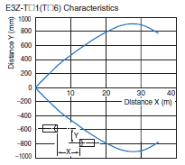 | 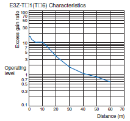 |
| ・ Through-beam Sensors: Indicates the sensing position limit for the Receiver with the Emitter at a fixed position. ・ Retro-reflective Sensors: Indicates the sensing position limit for the Retroreflector when the Sensor is at a fixed position. ・ Sensitivity is set to the maximum value in both cases and the area between the top and bottom lines is the detectable area. ・ An area 1.5 times the area shown in the diagram is required to prevent mutual interference with more than one Through-beam Sensor installed. | ・ The Excess Gain Ratio shown here is the value with the sensitivity set to the maximum value. ・ The rated sensing distance above is for a 15-m model. The graph shows that the Excess Gain Ratio is approximately 6 at the rated sensing distance. |
Diffuse-reflective Sensors
| Operating Range | Size of Sensing Object vs. Sensing Distance |
| E3Z-D[]1(D[]6) Characteristics | E3Z-D[]1(D[]6) Characteristics |
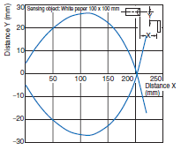 | 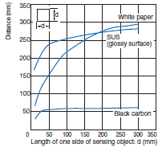 |
| ・ Indicates the sensing start position when a standard sensing object is moved in the Y direction (vertically along the optical axis). The bottom curve in the diagram is for when the sensing object is moved from the bottom. | ・ Indicates how the sensing distance varies with the size and surface color of the sensing object. |
| Note: These values are for the standard sensing object. The operating area and sensing distance will change for a different object. | |
Application and Data
(1)Relationship of Lens Diameter and Sensitivity to the Smallest Detectable Object
With a Through-beam Sensor, the lens diameter determines the size of the smallest object that can be detected.
With a Through-beam Sensor, a small object can be more easily detected midway between the Emitter and the Receiver that it can be off center between the Emitter and Receiver.
As a rule of thumb, an object 30% to 80% of the lens diameter can be detected by varying the sensitivity level.
Check the Ratings and Specifications of the Sensor for details.
The size given for the smallest object that can be detected with a Reflective Photoelectric Sensor is the value for detection with no objects in the background and the sensitivity set to the maximum value.
| Maximum sensitivity | Adjusted sensitivity |
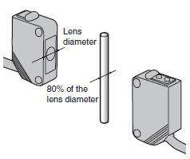 | 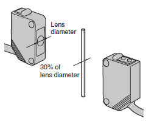 |
| Detects objects 80% of the lens diameter. | Detects objects up to 30% of the lens diameter. |
(2) Detecting Height Differences
Selecting Sensors Based on Detectable Height Differences and Set Distances (Typical Examples)
(3) MSR (Mirror Surface Rejection) Function
Principles
This function and structure uses the characteristics of the Retroreflector and the polarizing filters built into the Retro-reflective Sensors to receive only the light reflected from the Retroreflector.
The waveform of the light transmitted through a polarizing filter in the Emitter changes to polarization in a horizontal orientation.
The orientation of the light reflected from the triangular pyramids of the Retroreflector changes from horizontal to vertical.
This reflected light passes through a polarizing filter in the Receiver to arrive at the Receiver.
Purpose
This method enables stable detection of objects with a mirror-like surface.
Light reflected from these types of objects cannot pass through the polarizing filter on the Receiver because the orientation of polarization is kept horizontal.
Examples
A sensing object with a rough, matte surface (example (2)) can be detected even without the MSR function. If the sensing object has a smooth, glossy surface on the other hand (example (3)), it cannot be detected with any kind of consistency without the MSR function.
| (1) No Object | (2) Non-glossy Object | (3) Object with a Smooth, Glossy Surface(Example: battery, can, etc.) |
| The light from the Emitter hits the Reflector and returns to the Receiver. | Light from the Emitter is intercepted by the object, does not reach the Reflector, and thus does not return to the Receiver. | Light from the Emitter is reflected by the objectand returns to the Receiver. |
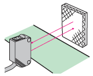 | 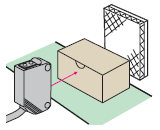 | 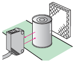 |
Caution
Stable operation is often impossible when detecting objects with high gloss or objects covered with glossy film. If this occurs, install the Sensor so that it is at an angle off perpendicular to the sensing object.
Retro-reflective Sensors with MSR function
| Retro-reflective Sensors with MSR function | |
| Classification by configuration | Model |
| Built-in Amplifier Sensors | E3Z-R61/R66/R81/R86 |
| E3ZM-R61/R66/R81/R86/B61/B66/B81/B86 | |
| E3ZM-CR61(-M1TJ)/CR81(-M1TJ) | |
| E3S-CR11(-M1J)/CR61(-M1J) | |
| Separate Amplifier Sensors | E3C-LR11/LR12 |
| E3NC-LH03 | |
| Built-in Power Supply Sensors | E3JM-R4[]4(T), E3JK-R[]12 |
Note:When using a Sensor with the MSR function, be sure to use an OMRON Reflector
Retro-reflective Sensors without MSR Function
When detecting a glossy object using a Retro-reflective Sensor without the MSR function, mount the Sensor diagonally to the object so that reflection is not received directly from the front surface.
| Retro-reflective Sensors without MSR function | |
| Classification by configuration | Model |
| Built-in Amplifier Sensors | E3Z-B61/B62/B66/B67/B81/B82/B86/B87 |
| Built-in Power Supply Sensors | E3JK-R[]11/R[]13 |
(4) Technology for Detecting Transparent Objects Exhibiting Birefringence P-opaquing (Polarization-opaquing)
Conventional methods for detecting transparent objects depend on refraction due to the shape of the sensing objects or on the attenuation of light intensity caused by surface reflection. However, it is difficult to attain a sufficient level of excess gain with these methods. P-opaquing uses the birefringent (double refraction) property of transparent objects to dramatically increase the level of excess gain. The polarization component that is disturbed by the sensing object as they pass along the line is cut by a special and unique OMRON polarization filter. This greatly lowers the intensity of the light received to provide stable detection with simple sensitivity adjustment. "P-opaquing" is a word that was coined to refer to the process of applying polarization in order to opaque transparent objects that exhibit the property of birefringence.
| Retro-reflective Sensors with P-opaquing | |
| Classification by configuration | Model |
| Built-in Amplifier Sensors | E3ZM-B |
| E3S-DB | |
(5) Surface Color and Light Source Reflectance
Surface Color Reflectance
Reflectance of Various Colors at Different Wavelengths of Light
Identifiable Color Marks
The numbers express the degree of margin (percentage of received light for typical examples).
Models with an RGB light source support all combinations.
| Sensor light color | Product classification | Model |
| Red light source | Fiber Sensors | E3NX-FA |
| E3X-HD | ||
| E3X-SD | ||
| E3X-NA | ||
| E3X-MDA | ||
| Photoelectric Sensors | E3C-VS3R E3C-VM35R E3C-VS7R | |
| Blue light source | Fiber Sensors | E3X-DAB-S |
| Green light source | Fiber Sensors | E3X-DAG-S |
| E3X-NAG | ||
| Photoelectric Sensors | E3C-VS1G | |
| White light source | Fiber Sensors | E3X-DAC-S |
(6) Self-diagnosis Functions
The self-diagnosis function checks for margin with respect to environmental changes after installation, especially temperature, and informs the operator of the result through indicators and outputs. This function is an effective means of early detection of product failure, optical axis displacement, and accumulation of dirt on the lens over time.
Principles
These functions alert the operator when the Sensor changes from a stable state to an unstable state. The functions can be broadly classified into display functions and output functions.
| Display function |
Stability Indicator (green LED)
The amount of margin with respect to environmental changes (temperature, voltage, dust, etc.) after installation is monitored by the self-diagnosis function and indicated by an indicator. (Illuminates steadily when there are no problems.)
Operation Indicator (Orange LED)
Indicates the output status.
| Output function |
The margin is indicated by an indicator light, and the state is output to alert the operator.
Purpose
Self-diagnosis functions are effective in maintaining stable operation, alerting the operator to displacement of the optical axis, dirt on the lens (Sensor surface), the influence from the floor and background, external noise, and other potential failures of the Sensor.
Example: Light-ON Operation
| Indicator state | Light-ON/Dark-ON indicated bythe orange indicator | Degree of margin with respect to temperature changes indicated by the green indicator | Self-diagnosisoutput | Example of diagnosed condition |
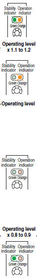 | Light Incident (orange indicator ON) | Stable use is possible. (Margin of 10% to 20% or higher) (Stability indicator: ON) | - | - |
| The margin is not sufficient. (Green indicator: OFF) | When this state continues for a certain period of time, an output alerts the operator. | 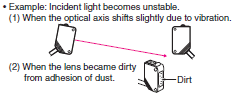 | ||
| Light Interrupted (orange indicator OFF) | the operator. | 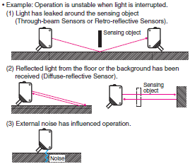 | ||
| Stable use is possible. (Margin of 10% to 20% or higher) (Stability indicator: ON) | - | - |
Applicable Models
| Classification by configuration | Models | Self-diagnosis function | |
| Display function | Output function | ||
| Separate Amplifier Sensors | E3C-LDA | Digital display | ● |
| E3NC-L | Digital display | ●(models with 2 outputs) | |
| E3C | ● | ●(E3C-JC4P) | |
| Built-in Amplifier Sensors | E3Z | ● | --- |
| E3ZM(-C) | ● | --- | |
| E3T | ● | --- | |
| E3S-C | ● | --- | |
| E3S-CL | ● | --- | |